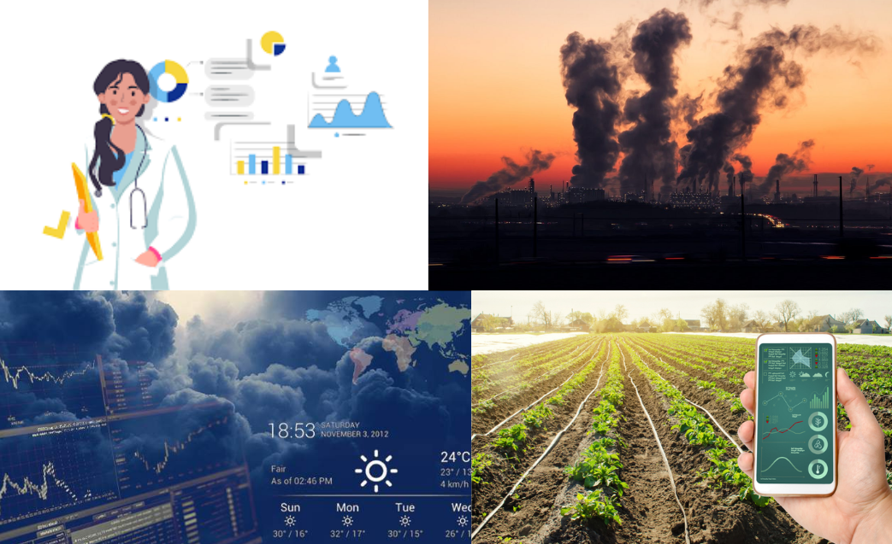
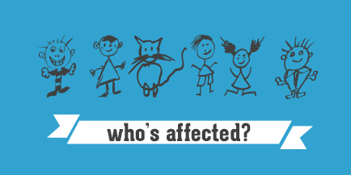

Trend analysis is an important tool in understanding changes over time across various fields which includes weather patterns, health crises, market variations, agricultural production, environmental conditions. By analysing historical data and identifying patterns trend analysis helps forecast future development and informs decision making process. This approach will also provide insights into interaction between sectors, making it useful for complete understanding of social changes. As we face many complex global challenges, the ability to analyse and predict the trends is critical. This helps the stack holders to implement necessary strategies based on trend forecasts, reducing risks and enhancing resilience. Moreover, the collaborative nature of trend analysis encourages interdisciplinary partnerships, bringing together expertise from various fields to tackle complex issues effectively. Basically, as technologies continues to advance, the accessibility of data and analytical tools authorize individuals and organisations to engage in trend analysis, democratising rights and encouraging a culture of informed decision making. Addition to it, the integration of machine learning and deep learning helps in accurate predictions and fetching more detailed insights. This analysis is paying way for data-driven solutions, innovative to pressing global issues. Thus, studying the trends will not helps us in understanding but also prepares us to address the future challenges with great efficiency.
Analysing the trends is an important measure as it helps in addressing the global challenges in various sectors by allowing is to identify patterns and shifts over time. Climate change is one such challenge as it impacts every aspect on the earth, making too critical to understand the trends such that changes in temperature, snow depth, extreme weather events. By understanding this trend helps the policy makers to take necessary actions and implement appropriate actions to handle effects of temperature changes effectively. Addition to it, the trend analysis in healthcare will save countless lives by monitoring different diseases like malaria, tuberculosis, influenza. This helps the health organizations to allocate resources, implement effective interventions in advance. Furthermore, as increasing pollution and environmental degradation would affect the public health and biodiversity. So, tracking the pollutions levels and their impacts on health became important. Analysing the trends carefully, we can get the sustainable practices and effective policies aiming to improve the air quality and water resources. Also, the analysing the trends in market helps assisting in recognising economic shifts and guiding investment decisions ultimately influencing job creations and economic resilience. As the stakeholders faces these multiple issues, the insights from trend analysis helps in promoted decision and driving towards positive change. One more important field is agriculture, the trend analysis in this field involves the examination and prediction of production quantity and economic value for different crops such that whether soybean yields have increased or decreased over the decades which helps in optimizing resource allocation, informing policy decisions and improving food security.
The outcomes of these trend analysis extend to a diverse array of stakeholders, including policymakers, healthcare providers, environmentalists, business and the general public. For example, farmers rely on accurate weather predictions to optimize their planting and harvesting schedules which minimizes the loss due to unexpected weather conditions. Urban planners and environmentalists depend on pollution trend analysis to support for cleaner air standards, influencing necessary actions and public awareness. Addition to it, consumers are becoming more aware of how this trends analysis will impact their daily lives from pollutions to fluctuations in temperatures. Understanding this trends the stakeholders can collaborate to make informed decisions that promote sustainability and we’ll-being across communities. For instance, the agriculture scientists and environmental specialists can collaborate with each other. This collaborations between the sectors leads to the development of crops which is not only highly- yielding but also adaptive to temperature changes. The governments in each region will get to know the health expenditures in advance which will help them to accommodate the money during budget plannings. Furthermore, the analysis and prediction of Gross domestic product will help the governments in countries to take necessary actions aiming to increase it. Analysis of quantity of crops grown will also helps in estimating GDP by providing insights into agricultural contributions to the economy.
The potential impact of this trend analysis extends to a wide range of individuals and organizations.The insights can be used by governments to create efficient policies and resource allocation. Governments can distribute funds for public health efforts and create focused prevention strategies, for example, by having a better grasp of illness recurrence trends. The data can be used by researchers to test theories, spot new patterns, and further scientific understanding. Businesses can use the analysis to make more informed decisions regarding investments, operations, and risk management. . For example, understanding changes in consumer behavior can help businesses tailor their products and marketing strategies.The information can be used by nonprofit groups to pinpoint areas of need and make wise funding allocations. By using the analysis to influence their decisions about their health, safety, and financial security, individuals can reap the benefits. For instance, being aware of the trends in climate change can help people make sustainable decisions and get ready for bad weather.
Existing research and gaps in each domain are as follows,
Weather: Although statistical models and machine learning have made great strides in weather forecasting, more precise forecasts are still required, particularly for extreme events. Furthermore, it is still difficult to comprehend the intricate relationships between various climate components and how those relationships affect local weather patterns.
Healthcare: Many infectious diseases now have effective vaccinations and treatments available, and monitoring systems have been put in place to keep an eye on disease outbreaks. Nonetheless, more potent approaches are required to combat new illnesses and lessen health disparities.
Pollution and Environment: Environmental rules have been set into place, and studies have been done to evaluate pollution levels and their effects. Ongoing difficulties include addressing the underlying causes of environmental degradation and creating more efficient technology for pollution management.
Market: Demographic research has been done, and forecasting models and economic indicators have been created. Nonetheless, enhancing the precision of economic projections and comprehending the enduring consequences of population shifts and technological progress are crucial domains of investigation.
Agriculture: Breeding projects have been carried out to create more hardy types, and agricultural practices have been devised to increase crop yields. However, tackling the issues of food security and malnutrition as well as developing more climate-resilient and sustainable agriculture practices are essential.
Our Project Aim to answer the following questions:
Weather:
1. What will the daily maximum and minimum temperatures be in a particular month of 2025 for a specific city?
2. How are temperature extremes changing over time in different cities?
Healthcare:
3. How can total expenditures in the healthcare sector be predicted for different regions?
4. What are the key factors or indicators contributing significantly to healthcare expenditures globally?
5. What are the estimated disease incidence rates (e.g., malaria) per 1,000 population across different countries under various global world health organization ?
Pollution and Environment:
6. What are the trends in greenhouse gas (GHG) emissions from waste (measured in million tonnes of CO2 equivalent) across different regions?
Market:
7. How can historical GDP growth data help to forecast future government revenue and expenditure patterns, and how should budgets be adjusted accordingly?
8. How can inflation data be used to predict changes in interest rates, and how should monetary policy be adjusted accordingly to ensure stable economic growth?
9. How do trade balances (exports and imports) affect the economic growth of countries, and how can trade policies be optimized to promote GDP growth?
Agriculture:
10. What will the maize production (in tonnes) be for specific countries in the year 2025?
11. What will the food supply (in kg per capita per year) be for specific countries in the year 2025?